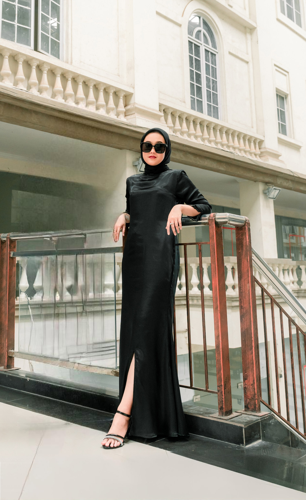

<style>
	.section3 .horizontal-line {
		width: 240px;
		height: 2px;
		background-color: white;
	}

	.section3 .head {
		display: flex;
	    gap: 20px;
	}

	.section3 .heading-detail{
		width: 100%;
	}

	.section3 .the-bride {
		font-family: "Roboto", Sans-serif; 
		font-size: 30px;
		line-height: 1.1em;
		letter-spacing: 1.3px;
		font-weight: bold;
		color:white;
	}

	.section3 .description {
		font-size: 15px;
		font-family: "Cormorant", system-ui, -apple-system, BlinkMacSystemFont, sans-serif;
		color: #FFFFFF;
	}

	.instagram-link {
		color: white;
	}
	
	.instagram-link:hover {
		color: blue;
	}
</style>
<section class="section3">
    <div class="slideshow-container">
        <div class="slide active">
            
        </div>
    </div>
    <div class="heading-detail">
        <div class="head">
            <div class="head-container">
                <div class="horizontal-line"></div>
              </div>
              <div class="the-bride">
                THE BRIDE
              </div>
        </div>
        <div class="description">
            <div style="float:left;">
                <div style="font-weight: bold;font-size: 22px;" class="mb-3">Novrita Inka Cahya</div>
                <div>Putri dari Bapak Kairin & Ibu Endang Indriati</div>
            </div>
            <a class="btn btn-outline-light mt-4 shadow-sm" style="float:right;" href="https://www.instagram.com/novritainkac" class="btn btn-outline-dark mt-3">
                <i class="fa-brands fa-instagram me-2"></i>Instagram
            </a>
        </div>
    </div>
</section>